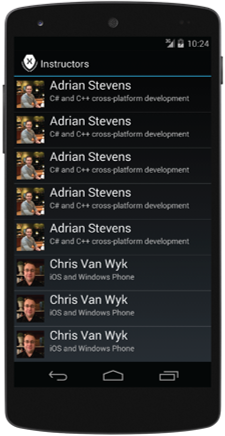

Exercise 4: Use layout recycling and the view-holder pattern
Duration
15 minutes
Lab goals
The goal of this lab is to increase the efficiency of your custom adapter using two common Android techniques: layout recycling and the view-holder pattern.
The completed app is shown below, there are duplicate instructors in the collection to give enough data to enable scrolling and view recycling.
Here is a high-level description of the required tasks for this lab:
-
Increase the amount of data so the
ListViewwill become scrollable. The easiest way to do this is to use duplicate instructor data. When you do this, you will likely need to cache and reuse the instructor images to conserve memory. -
Modify your adapter's
GetViewmethod to reuse theconvertViewparameter when it is non-null instead of inflating a new layout. -
Modify your adapter's
GetViewmethod so it does not useFindViewByIdto lookup the views inside the layout multiple times. Do the lookup once when you inflate the layout and cache the references inside a holder object that you load into the layout'sTagproperty.
Required assets
The provided Part 04 Resources folder contains resources that you will need in order to complete the lab:
-
The file ImageAssetManager.cs contains a simple class that creates a
Drawablefrom an image file packaged as an Android Asset. It maintains a dictionary keyed by the image filename so it will create exactly one copy of each image. - The file ViewHolder.cs contains a class that contains nothing but three properties, one for each view in the InstructorRow.axml layout file. This will be used to implement the view-holder pattern.
- The Part4.Start folder contains a starter solution you can use if you did not do the previous exercise or if you would like to begin with a fresh project.
- The Part4.Completed folder contains a completed version of the lab you can use to check your work.
Please make sure you have this folder before you begin.
Exercise challenge
Use the information in the worksheet to accomplish the tasks outlined above. Alternatively, you can use the step-by-step instructions provided below to work through the exercise.
Steps
Below are the step-by-step instructions to implement the exercise.
Add more data
-
Open InstructorData.cs. Uncomment the extra calls to
AddInstructorsso the amount of data will be large enough that theListViewwill be scrollable. TheListViewwill then start recycling the layouts that scroll off the screen. -
Add the file ImageAssetManager.cs from the Part 04 Resources folder
to the project. Open the file and look at the
Getmethod: you pass it an Activity and a path relative to your Assets folder and it returns the file as aDrawable. -
Modify your
InstructorAdapter.GetViewmethod to useImageAssetManager.Getto load the instructor's photo. -
Run the app to test your work. The row layout should look the same but you should see multiple
copies of each instructor. The data is sorted by name so the multiple copies will be adjacent.
The
ListViewhas built-in scrolling; scroll the app to verify this.
Use layout recycling
There is overhead involved in creating a row for a ListView. You first inflate your
chosen layout file, then you use FindViewById to get references to the views in the
layout, and finally you populate the views with your code-behind data.
ListView tries to reduce this overhead by reusing the instantiated layouts: as one
row scrolls off the screen, that layout becomes available for reuse. When ListView
calls your adapter's GetView method, it sometimes passes an old layout to you in the
convertView parameter for you to reuse. You still need to do the other steps
(get references to the views inside the layout and populate the views with your code-behind data)
but this reduces the amount of work required and reduces the pressure on the garbage collector.
-
Open InstructorAdapter.cs and locate your
GetViewmethod. -
Modify
GetViewto use view recycling. If theconvertViewparameter is non-null you should reuse it. If it is null, you should inflate a new layout.
Use the view-holder pattern
Recall that there are three steps to create a row for a ListView: inflate the layout
file, lookup the views within the layout, and populate the views with data. Layout recycling addressed
the first of these. Here, we use the view-holder pattern to address the second. We will lookup the
views in the layout file only once when the layout is inflated. Then we will cache the references
for later use when the layout is recycled.
-
Add the file ViewHolder.cs from the Part 04 Resources folder
to the project. Open the file and look at the class definition. Notice that its base class
is
Java.Lang.Object; this is required to store an instance of this class in theTagfield of a view. -
Open InstructorAdapter.cs and locate your
GetViewmethod. -
Modify
GetViewto use the view-holder pattern. When you first inflate the layout file, useFindViewByIdto get references to the views within the layout. Create aViewHolderobject, populate it with the view references, and store it in theTagproperty of the layout. When you populate the views with your code-behind data, use the references in the holder instead of looking them up again withFindViewById. -
Run the app to test your work. Scroll the app to make sure your
GetViewmethod is still working correctly. It should look the same as before since we only added efficiency optimizations and did not change the UI.
Summary
This exercise implemented two common Android techniques to improve the efficiency of your custom
ListView adapter. Layout recycling increases speed and reduces memory usage by
reusing layouts instead of creating a new one for each row. View holder increases speed
by minimizing the number of calls to FindViewById. The two techniques work well
together and can make a big difference in ListView's ability to handle a large
collection.